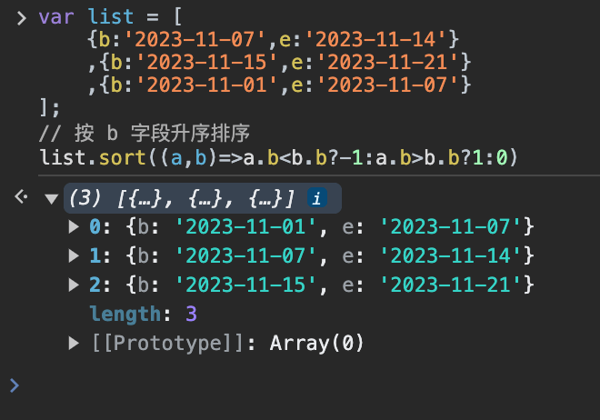

JavaScript sort()Método
 Objeto Array de JavaScript
Objeto Array de JavaScriptEjemplo
Ordenar array:
fruits.sort();
fruitsResultado de salida:
Pruébalo »
Definición y uso
El método sort() se utiliza para ordenar los elementos de un array.
El orden de clasificación puede ser alfabético o numérico, y en orden ascendente o descendente.
El orden de clasificación predeterminado es alfabético ascendente.
Nota:Cuando los números se ordenan alfabéticamente, "40" se colocará antes que "5".
Para la clasificación numérica, debes pasar una función como argumento.
La función especifica si los números se ordenan en orden ascendente o descendente.
Esto puede sonar difícil de entender, pero puedes entenderlo mejor con los ejemplos al final de esta página.
Nota:¡Este método cambiará el array original!.
Compatibilidad del navegador


Todos los navegadores principales admiten sort().
Sintaxis
Valores de parámetros
| Parámetro | Descripción |
|---|---|
| sortfunction | Opcional. Especifica el orden de clasificación. Debe ser una función. |
Valor de retorno
| Type | Descripción |
|---|---|
| Array | Una referencia al array. Ten en cuenta que el array se ordena sobre el array original, sin generar una copia. |
Detalles técnicos
| JavaScript Version: | 1.1 |
|---|
Más ejemplos
Ejemplo
Ordenamiento numérico (números y ascendente):
points.sort(function(a,b){return a-b});
Resultado de salida de points:
Pruébalo »
Ejemplo
Ordenamiento numérico (números y descendente):
points.sort(function(a,b){return b-a});
Resultado de salida de points:
Pruébalo »
Ejemplo
Ordenamiento numérico (letras y descendente):
fruits.sort();
fruits.reverse();
Resultado de salida de fruits:
Pruébalo »
Otras extensiones
Transeúnte B
305***8979@qq.com
Este método sort(), si observas el ejemplo de arriba, resultará muy complicado.
El método sort() tiene un parámetro opcional que debe ser una función para que este lo llame. ¡Entonces es una función de devolución de llamada (callback)!
La función de devolución de llamada debe tener dos parámetros: ¡¡¡el elemento del primer parámetro definitivamente está delante del elemento del segundo parámetro!!!
La clasificación de este método depende del valor de retorno de la función de devolución de llamada:
Ejemplo:
var arr = [9,7,2]; arr.sort(function(a,b){ if(a>b) // 如果 a 大于 b,位置互换 return 1; else //否则，位置不变 return -1; }); // 排序结果: 2,7,9Transeúnte B
305***8979@qq.com
panlf
364***434@qq.com
Ordenamiento descendente:
Pruébalo »
panlf
364***434@qq.com
huangyifan
546***203@qq.com
Aquí corrijo la nota del primer usuario:
var arr = [9,7,2]; arr.sort(function(a,b){ if(a>b) // 如果 a 大于 b,位置互换 return 1; else //否则，位置不变 return -1; });En primer lugar, el primer parámetro no está delante del segundo parámetro; al contrario, el parámetro b siempre está delante del parámetro a.Es decir, la primera comparación a>b en realidad compara 7>9.
Primera comparación: 7>9, el resultado es false, es decir, return -1; en este momento a se intercambia al frente de b, es decir, 7 está antes de 9, por lo que las posiciones se intercambian. No es que a>b intercambie posiciones como dijo este usuario, sino que a<b intercambia posiciones.
Pero el resultado final de salida es el mismo, porque la comprensión del orden de a y b está invertida, y también se invirtió el concepto de que el resultado de return causa el intercambio de posiciones. Dos negativos hacen un positivo, y el resultado es el mismo.
huangyifan
546***203@qq.com
杨shuai
175***8771@qq.com
Deduplicación y orden ascendente:
杨shuai
175***8771@qq.com
九亿少女脚臭
pp7***74714@gmail.com
1. Ascendente (de menor a mayor)
arr.sort(function(a,b){//升序排序 if(a<b){return -1;}//小于0 不换位置，因为现在a在b的前面 a<b，这是我们想要的，所以不换位置 else if(a>b){return 1;}//大于0 换位置,因为升序嘛，肯定是要让小的在前面，而现在a>b，所以要换成b a else{return 0;}//a和b相等，不换位置 });Aquí es donde nosotros mismos podemos usar una función de comparación (función de devolución de llamada) para establecer la regla de clasificación. Usamos el valor de retorno para decirle a este método si, al comparar dos números, se intercambian las posiciones o no:
------------------------------------------------------------------------------------------------------------------------------------------------------------------------------------------------------------------------------------------------------------------------------------------
2. Entonces, el descendente (de mayor a menor), también es simple:
arr.sort(function(a,b){ if(a<b){return 1;}//我们需要的是降序，而这里a<b,不是我们想要的，我们想要 b a,所以要换位置→return 1 else if(a>b){return -1;}//这里a>b，刚好是我们需要的，所以不用换位置，直接return -1 else{return 0;}//相等，不换 });Además, un comentario: si a y b son iguales, no se intercambian posiciones; aquí da igual si se intercambian o no, después de todo son iguales. Sin embargo, diferentes navegadores pueden intercambiar posiciones o no, pero no necesitamos preocuparnos por eso.
Surgió un problema
En realidad, diferentes navegadores implementan este método de ordenamiento sort de manera diferente; Firefox usa ordenamiento por fusión (merge sort) y Google usa una versión mejorada de ordenamiento rápido (quicksort).
Menciono esto porque al principio me encontré con un problema:
arr = [5,4]; arr.sort(function(a,b){//括号里是回调函数 console.log("a=" +a); console.log("b=" +b); }); console.log(arr);El código anterior extrae los elementos del array y los pasa como argumentos reales a los parámetros formales a y b de la función; al mostrar la salida, los valores de a y b son diferentes en distintos navegadores:
En Firefox se mostrará: a = 5; b = 4;
En Google/IE/Edge: a = 4; b = 5;
------------------------------------------------------------------------------------------------------------------------------------------------------------------------------------------------------------------------------------------------------------------------------------------
Proceso que causa el error:
Estaba depurando en Google Chrome, así que al principio, igual que la conclusión del método sort, pensé que a = el valor anterior del array, b = el valor posterior del array; entonces a = 5, b = 4.
Sin embargo, en Google Chrome la salida es a = 4, b = 5; entonces justo vi lo que dijo ese compañero de arriba: debería ser que b siempre está delante de a, es decir, arr = [primero, segundo]; de esta manera, al tomar los elementos, ¿no sería b = primero, a = segundo?
Luego pensé: ¿no tendría que cambiar también la regla del valor de retorno en esta función?
PeroOriginalmente se tenía la intención de implementar un orden ascendente, pero el resultado de ejecución en el navegador fue descendente.(Por supuesto, Firefox también era descendente)
Me preocupó durante mucho tiempo; luego imprimí los valores de a y b y probé en varios navegadores; finalmente en Firefox encontré una pista:
En Firefox se mostrará: a = 5; b = 4;
En Google/IE/Edge: a = 4; b = 5;
Poco a poco me di cuenta de que quizás al utilizar este método de ordenamiento sort, nosotros mismos no necesitamos considerar si al asignar los elementos del array se asigna el primer elemento a a o a b.
Busqué en los blogs de muchas personas y descubrí que en el código de depuración de Google de hace unos años, la salida de a y b también era a = 5; b = 4;
Solo que posteriormente se actualizó y mejoró, y luego cambió a lo que es ahora: a=4, b=5
Pero ya sea Firefox o Google, el efecto de ordenamiento que finalmente implementan es el mismo: ambos son ascendente o ambos son descendente.
Por lo tanto, llegamos a una conclusión: no necesitamos prestar atención a a y b (si el anterior se pasa a a, o el posterior se pasa a a).
Lo que necesitamos recordar es:
a al frente, b detrás; cuando a < b, no se intercambia la posición, return -1 (cuando necesitamos orden ascendente)
Cuando a > b, se intercambia la posición, return 1 (cuando necesitamos orden ascendente)
Cuando a = b, no se intercambia la posición, return 0;
------------------------------------------------------------------------------------------------------------------------------------------------------------------------------------------------------------------------------------------------------------------------------------------
Cuando se necesita orden descendente, solo hay que intercambiar return 1 y return -1.
Avance final: directamente orden ascendente: return a - b;
(Ascendente, si a < b, el valor de retornoes menor que 0,es lo que queremos, no se intercambia la posición; si a > b, mayor que 0, no es lo que queremos, por lo que se intercambia la posición)
Del mismo modo, descendente: return b - a;
九亿少女脚臭
pp7***74714@gmail.com
闻丝卡达
114***4761@qq.com
De forma predeterminada, el método sort() ordena los elementos del array en orden ascendente: es decir, el valor más pequeño se coloca al principio y el más grande al final. Para realizar la ordenación, el método sort() invoca el método de transformación toString() de cada elemento del array y luego compara las cadenas resultantes para determinar cómo ordenar. Incluso si cada elemento del array es un valor numérico, el método sort() compara cadenas, como se muestra a continuación:
Se puede ver que, aunque el orden de los valores en el ejemplo no presenta problemas, el método sort() también cambia el orden original según el resultado de comparar las cadenas. Porque aunque el valor numérico 5 es menor que 10, al comparar cadenas, "10" se coloca delante de "5", por lo que el orden del array se modifica. No hace falta decir que esta forma de ordenar no es la mejor opción en muchos casos. Por lo tanto, el método sort() puede aceptar una función de comparación como parámetro, para que podamos especificar qué valor va delante de cuál.
La función de comparación recibe dos parámetros. Si el primer parámetro debe ir antes que el segundo, devuelve un número negativo; si los dos parámetros son iguales, devuelve 0; si el primer parámetro debe ir después del segundo, devuelve un número positivo. A continuación se muestra una función de comparación simple:
function compare(value1, value2) { if (value1 < value2) { return -1; } else if (value1 > value2) { return 1; } else { return 0; } }Esta función de comparación se puede aplicar a la mayoría de los tipos de datos, siempre y cuando se pase como parámetro al método sort(), como se muestra en el siguiente ejemplo.
Después de pasar la función de comparación al método sort(), los valores numéricos siguen manteniendo el orden ascendente correcto. Por supuesto, también se puede producir un resultado de orden descendente mediante la función de comparación, simplemente intercambiando los valores que devuelve la función de comparación.
function compare(value1, value2) { if (value1 < value2) { return 1; } else if (value1 > value2) { return -1; } else { return 0; } } var values = [0, 1, 5, 10, 15]; values.sort(compare); alert(values); // 15,10,5,1,0闻丝卡达
114***4761@qq.com
Casey
lil***jian@sina.com
Las explicaciones anteriores son excelentes. Aquí agrego un ejemplo de ordenación de un array de objetos, para que sea más fácil de entender:
var list = [ {b:'2023-11-07',e:'2023-11-14'} ,{b:'2023-11-15',e:'2023-11-21'} ,{b:'2023-11-01',e:'2023-11-07'} ]; // 按 b 字段升序排序 list.sort((a,b)=>a.b<b.b?-1:a.b>b.b?1:0)
Casey
lil***jian@sina.com